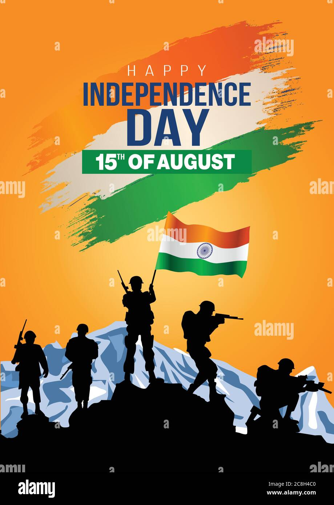

HAPPY INDEPENDENCE DAY
Saluting the Indomitable Spirit of the Indian Army

The Indian Army, a formidable force of dedication, valor, and selfless sacrifice, stands as a symbol of unwavering commitment to safeguarding the nation's sovereignty and territorial integrity. Throughout its illustrious history, the Indian Army has proven time and again that it is not just a military organization but a guardian of the nation's values and pride. This tribute celebrates the indomitable spirit of the Indian Army and highlights its relentless efforts in protecting the country and its citizens.
Historical Journey
- The Indian Army traces its roots back to ancient times, where armies were formed to protect various kingdoms and territories across the subcontinent. Over the centuries, it evolved and adapted to changing circumstances, witnessing pivotal moments in the nation's history, such as the struggle for independence against colonial rule.
- During the Indian independence movement, the Indian Army played a crucial role in shaping the destiny of the nation. Soldiers, from diverse backgrounds and regions, came together, setting aside their differences, and united under the common goal of attaining freedom for their beloved motherland. Their sacrifices and determination paved the way for an independent India.
- After gaining independence, the Indian Army became an integral part of the newly formed Republic of India. It faced its first major challenge in the form of the First Kashmir War in 1947-1948, when Pakistan invaded the princely state of Jammu and Kashmir. Indian troops successfully defended the region, but the conflict marked the beginning of a series of wars and skirmishes with Pakistan over the disputed territory of Kashmir.
- Over the years, the Indian Army has been actively involved in several military operations, including the wars with Pakistan in 1965 and 1971 and the Kargil War in 1999. Each conflict has showcased the bravery and professionalism of the Indian Army, securing crucial victories and upholding the nation's honor.
Peacekeeping Missions
- Beyond its borders, the Indian Army has also made significant contributions to global peacekeeping missions under the United Nations banner. India's commitment to promoting peace and stability in conflict-ridden regions has earned the country admiration and respect on the international stage. Indian peacekeepers have been deployed to various regions, including Africa and the Middle East, where they have successfully helped maintain peace and provide humanitarian aid to those in need.
- India's commitment to peacekeeping aligns with its broader foreign policy objective of promoting global peace and stability. The Indian Armed Forces, including the Army, Air Force, and Navy, actively participate in peacekeeping missions. Indian troops are highly respected for their professionalism, discipline, and adaptability in diverse operational environments.
- Peacekeeping missions are essential components of the United Nations' efforts to maintain international peace and security. These missions aim to help countries torn by conflicts create conditions for lasting peace, stability, and development. The Indian Army has been actively involved in various peacekeeping operations since India's first participation in 1950 in the Korean War under the UN flag. Over the years, India has become one of the largest contributors to UN peacekeeping missions.
- Peacekeeping missions are essential components of the United Nations' efforts to maintain international peace and security. These missions aim to help countries torn by conflicts create conditions for lasting peace, stability, and development. The Indian Army has been actively involved in various peacekeeping operations since India's first participation in 1950 in the Korean War under the UN flag. Over the years, India has become one of the largest contributors to UN peacekeeping missions.
Defending the Borders
- One of the most critical roles of the Indian Army is safeguarding the nation's borders against external threats. From the harsh terrains of the Himalayas to the deserts of Rajasthan, the Indian Army operates in diverse and challenging environments. Whether it's guarding the Line of Control in Jammu and Kashmir or the high-altitude regions of Ladakh, the soldiers of the Indian Army exhibit unwavering bravery and resilience.
- The Indian Army's defense capabilities have been tested in numerous conflicts, including the wars with Pakistan and China. Despite facing adversities, the spirit of the Indian Army has remained unbroken, and they have emerged victorious, defending the nation's honor with utmost courage.
Disaster Relief Operations
- Apart from its military duties, the Indian Army has time and again come forward to assist in disaster relief operations. Be it natural calamities like earthquakes, floods, or man-made disasters, the Indian Army has been at the forefront, providing relief, rescue, and rehabilitation support to affected communities. Their rapid response, efficiency, and coordination in disaster-stricken areas have saved countless lives and inspired hope amidst despair.
- Disaster relief operations undertaken by the Indian Army demonstrate their commitment to serving the nation beyond traditional military roles. Their humanitarian efforts reflect the true essence of the armed forces, embodying the spirit of selfless service and compassion. The Indian Army's participation in disaster relief not only showcases their prowess in crisis management but also instills confidence and hope in the hearts of those facing dire circumstances. These efforts highlight the integral role the armed forces play in safeguarding the nation and its people, not only during conflicts but also during times of natural calamities and humanitarian crises.
Nation-Building Efforts
- After Independence, he became India’s first Deputy Prime Minister. On the first anniversary of Independence, Patel was appointed as the Home Minister of India.The Indian Army's contribution to nation-building extends beyond its role in national security and defense. Through various initiatives, the Army has been actively involved in developing infrastructure, providing educational opportunities, and empowering communities in remote areas. Their dedication to uplift the underprivileged sections of society exemplifies their commitment to the welfare of the nation as a whole.
Conclusion
- The Indian Army's legacy of bravery, sacrifice, and valor is a testament to the spirit of India's armed forces. The soldiers, selflessly devoted to the service of the nation, continue to stand tall against all odds, protecting the country's interests and its citizens with unmatched determination. Their unwavering dedication and commitment inspire every Indian to stand united and proud.
As we salute the Indian Army, let us also express our gratitude to the families of these brave soldiers, who share their burdens and support them from afar. Their sacrifices are an integral part of the Indian Army's strength and resilience.
On this day and every day, let us remember and honor the indomitable spirit of the Indian Army, for they are the true guardians of our nation's freedom, security, and unity. Jai Hind!
"Guardians of the Nation, Courage in Every Action"
- Happy Independence Day